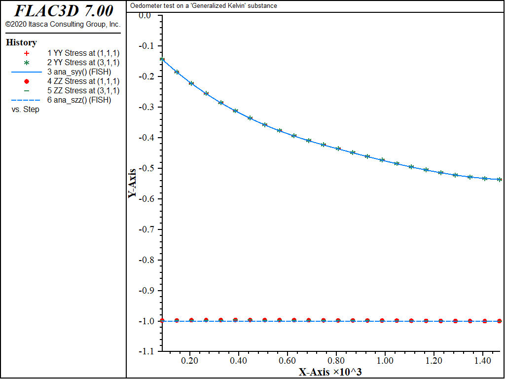
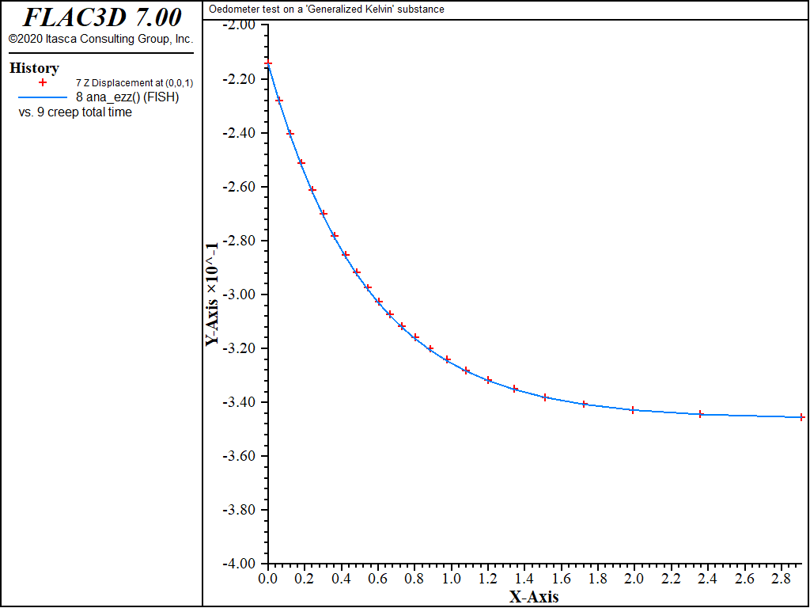

Kelvin 模型：固结仪试验
注意
要在 FLAC3D 中查看此项目，请使用菜单命令 。 选择“Creep/OedometerKelvin”并选择“OedometerKelvin.f3dprj”以加载。 该项目的主数据文件见本示例末尾（main data files）。
本示例比较了对广义 Kelvin 物质（Kelvin 单元与剪切弹簧串联）进行固结仪试验的数值解与解析解。 在固结仪试验中，试样底部固定，侧向变形被约束， 在试样顶部施加恒定的竖向荷载 \(P\)。
竖向应变和应力的解析解为
其中 \(b\)、\(a\) 和 \(c\) 为三个常数：
\(K\)、\(G_{K}\)、\(G\) 为物质的体积模量和剪切模量（\(G_{k}\) 对应 Kelvin 单元，\(G\) 对应串联的弹簧），\(\eta\) 为黏度。
数值模拟在两个试样上同时进行，每个试样由一个网格单元表示， 分别使用 Burgers 模型（Burgers model） 和 Burgers-Mohr 模型（Burgers-Mohr model）。
由于未给特性 黏性麦克斯韦（viscosity-maxwell） 赋值，模型不会考虑 Maxwell 阻尼器。 此外，将黏聚力特性设为很高的值，以防止触发 Burgers-Mohr 模型（Burgers-Mohr model） 的塑性逻辑。初始状态首先通过将模型计算到弹性平衡来获得。 然后将速度重置为零。对于粘性响应， 初始时步设为很小的值（\(\Delta t\) = 10-3），与黏度与剪切模量之比（\(\eta /G_K\) = 1.0）相比很小。采用本示例所用的蠕变时步参数设置， 当不平衡力比小于 10-4 时时步按 1.01 倍增大，直到 \(\Delta t\) = 0.1。模拟结束时， 响应由串联作用的两个剪切模量 \(G_{k}\) 和 \(G\) 决定（长期行为）。 图 1（Figure 1） 和 图 2（Figure 2） 表明两个试样中应力和应变的 解析解与数值预测吻合良好。


图 1：Kelvin 物质上的固结仪试验：应力解析值与数值值随时间的变化。


图 2：Kelvin 物质上的固结仪试验：应变解析值与数值值随时间的变化。
数据文件
;------------------------------------------------------------
; 固结仪试验——广义 Kelvin 体
;-------------------------------------------------------------------
model new
model large-strain off
fish automatic-create off
model title "Oedometer test on a 'Generalized Kelvin' substance"
model configure creep
program call 'parameter'
[ini_cons]
; --- 模型 ---
zone create brick size 3 1 1
zone cmodel burgers range position-x 0 1
zone cmodel burgers-mohr range position-x 2 3
zone cmodel assign null range position-x 1 2
;
zone property density 1 bulk [c_bu]
zone property shear-maxwell [c_sh] shear-kelvin [c_ksh] ...
viscosity-kelvin [c_kvi] range position-x 0 1
zone property shear-maxwell [c_sh] shear-kelvin [c_ksh] ...
viscosity-kelvin [c_kvi] cohesion 1e20 tension 1e20 ...
range position-x 2 3
;
zone gridpoint fix velocity-x
zone gridpoint fix velocity-y
zone gridpoint fix velocity-z range position-z 0
zone face apply stress-normal -1.0 range position-z 1
; --- 弹性平衡 ---
model solve ratio 1e-4
; --- 将速度重置为零 ---
zone gridpoint initialize velocity (0,0,0)
; --- 历程 ---
history interval 1
zone history stress-yy position 1 1 1
zone history stress-yy position 3 1 1
fish history ana_syy
zone history stress-zz position 1 1 1
zone history stress-zz position 3 1 1
fish history ana_szz
zone history displacement-z position 0 0 1
fish history ana_ezz
model history creep time-total
; --- 黏性行为 ---
model creep timestep starting 1.e-3
model creep timestep lower-bound=1e-4
model creep timestep upper-bound 5e-4
model creep timestep minimum=1.e-3
model creep timestep maximum=0.1
model solve time-total=3.
model save 'kelvin'
| 这些内容对您有帮助吗？… | FLAC3D © 2019, Itasca | 原文更新于 2020 年 10 月 8 日 |